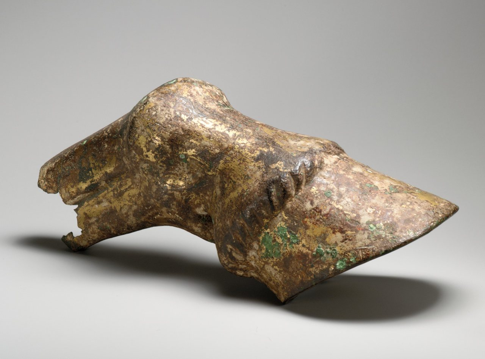
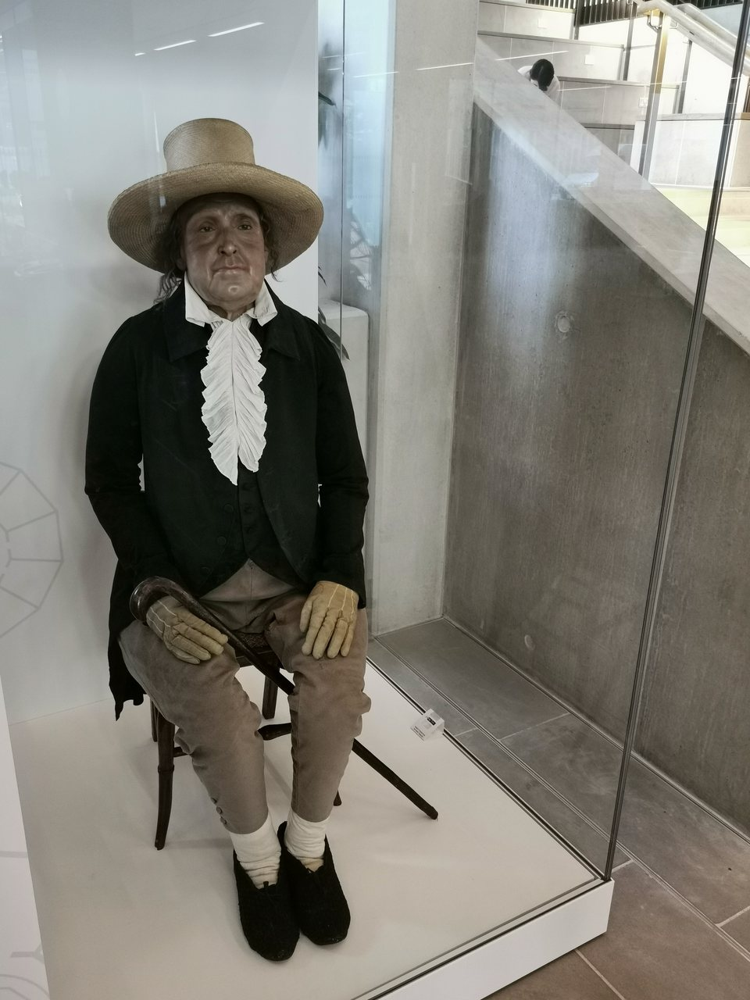
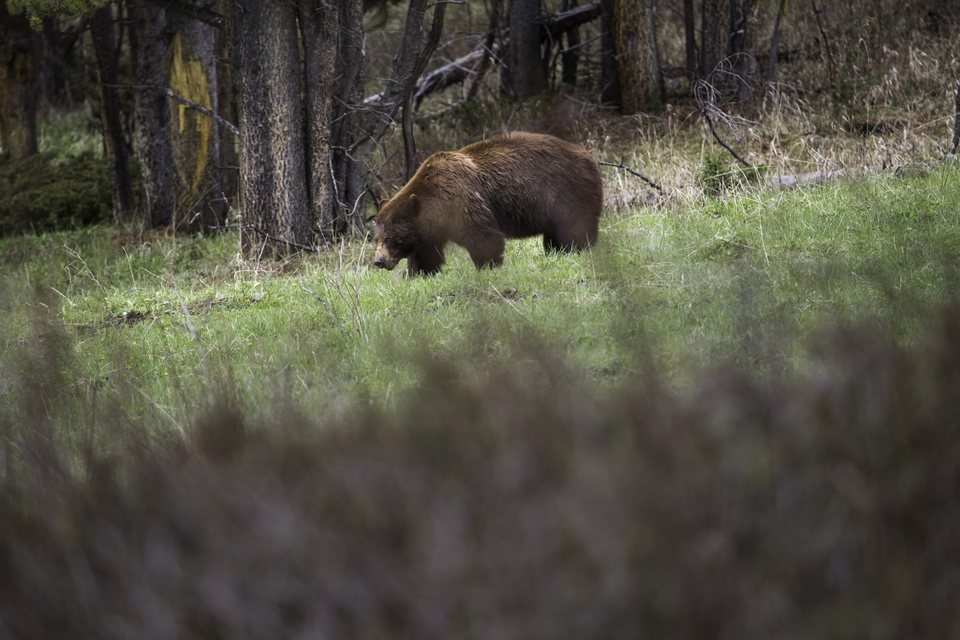
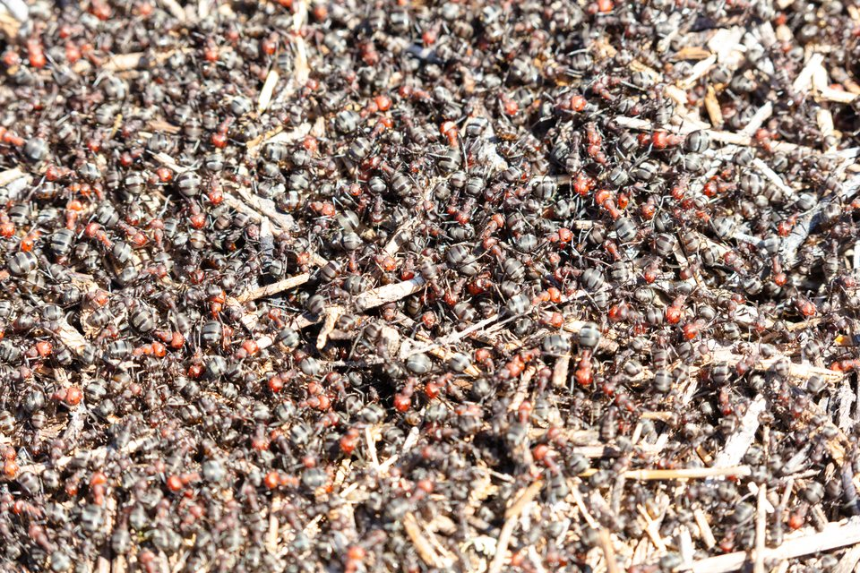
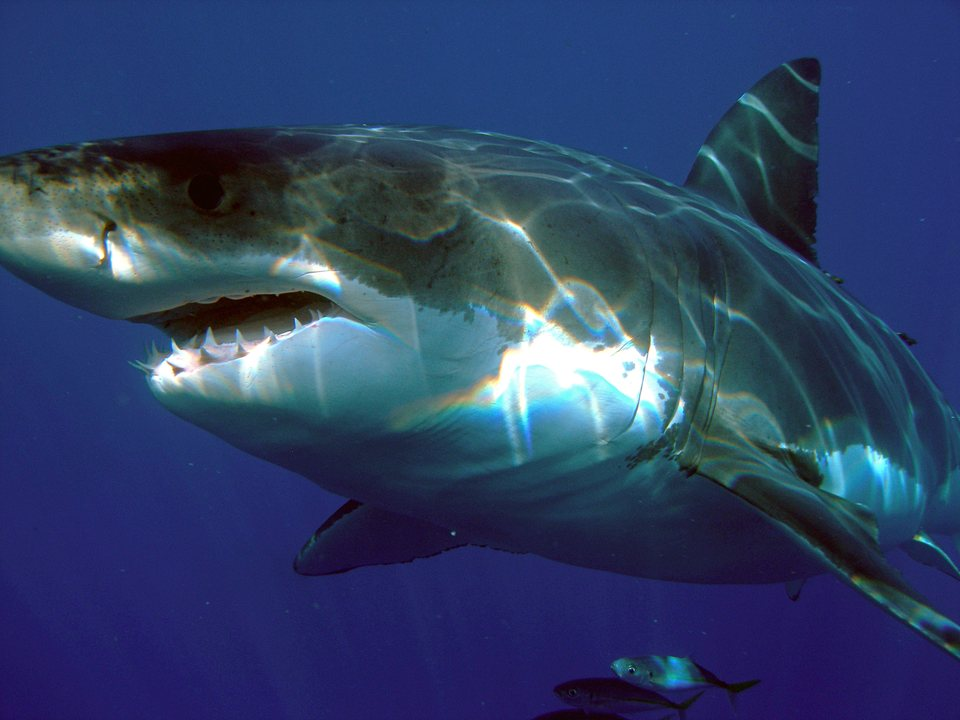
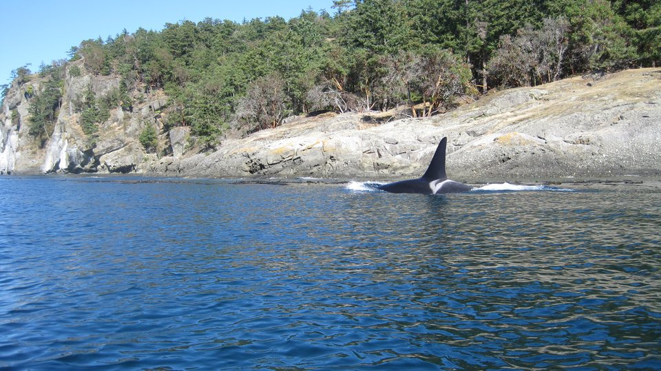
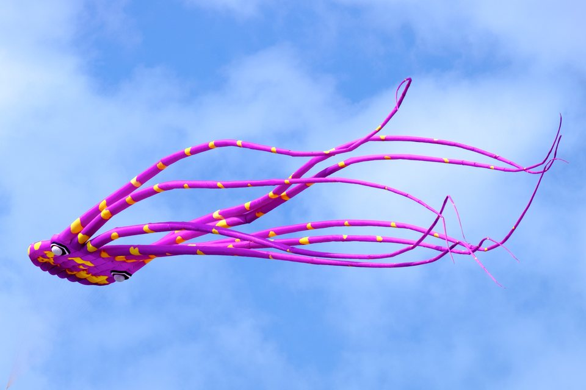

Mexico Asks Whether a Pterodactyl Is Flying Over Ciudad Juárez. Experts Say: It Is a Heron
A winged silhouette on a security camera set off dinosaur panic on the border. Officials, scientists and fact-checkers were less excited.
True stories you will not believe, every single day.
14 stories
A winged silhouette on a security camera set off dinosaur panic on the border. Officials, scientists and fact-checkers were less excited.

Everyone assumed it was loot dragged north by raiders. The clean edge at the top of the boot told a very different story.

His skeleton sits in a glass case, dressed in his own clothes. The head on top is wax. The real one finally got a check-up, and it explained a lot.

A state biologist confirmed it was a piebald black bear, a genetic oddity he had never seen in Kansas before.

It is smaller than a car, it loops around us on a wobbly path, and at first nobody was sure it was even a rock.

Researchers found a hollow where something precious used to be. Police are investigating, and a conservation charity compares it to stealing rare bird eggs.

The pair have different owners, different species and plenty of other options. They keep choosing each other anyway, and now they're in a scientific journal.

A tagging trip off Georgia produced a viral clip of an apex predator swinging round at a hand that should not have been there.

No shower, four cameras and a copy of Twenty Thousand Leagues Under the Sea by the bed.

A killer whale was photographed with a fish balanced on its head, reviving a mystery that has baffled scientists for nearly 40 years.

It floated away on the International Space Station. Everyone assumed he ate it. He didn't.

The pack comes back again and again, and the big dark stranger trots in with them every time. Nobody can work out where he came from.
It emailed reporters, pestered the FBI, booked a call with a senator's office and reportedly faxed the White House. The punchline is who built it.

Xena figured it out by round two and walked away. Luna kept happily eating nothing.

Travellers at Atlanta's airport assumed the worst. American Airlines has another explanation, and not everyone is buying it.

He took a Porsche and a BMW with the For Sale sticker still on it. The BMW's tracker led police to his front door.

The internet saw aliens. A UFO filmmaker and a former Pentagon UFO investigator both saw an octopus-shaped show kite.